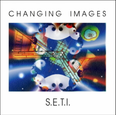

S.E.T.I. (CD 2000)
|
 1.
Survey 2. Seti 3.
Gates 4.
Robot 5.
Teleport 6.
Planet Inca 7.
Gates 2 Consciousness 8.
Fear 9. Seti Warp Equipment Martin: Volker: Recording:
|
S.E.T.I., 2000 CD CI004
Search
for ExtraTerrestrial Intelligence This actual CD album from Changing Images is dedicated to Project SETI
– The Search for extraterrestrial Intelligence. And they are not alone with this: 40 years
ago the project SETI was startet, triggerd
by an article from Cocconi and Morrison published
in the magazine NATURE. They argued, that it should
be possible to receive messages from alien intelligences with radiotelescopes even through a distance of thousands of lightyears. Frank Drake, a researcher of astrophysics started at that time
his first projects to analyse radiotelescope-signals
for possible messages. With his known “Drake-formula” he showed, that there must be
intelligent life, using technology similar or higher developed compared to
mankind with significant high
probability. Today, he is president of the SETI-Institute, dedicated to this
search. To analyse the huge amount of data, a unique project was founded –
called SETI@home. Via Internet, the calculating
power of hundred thousands of PCs is connected – more than 50.000 years
CPU-time was achieved right now, more than any supercomputer could
offer. (Info: http://setiathome.ssl.berkeley.edu). History will
show, wether this giant search will succeed. Changing Images approaches to this story in the tradition of Stanley Kubricks
"2001 Odyssee in Space": Dave and GAL –
the female bordcomputer of our spaceship - are on
track to alien lifeforms.
The zodiac constellation is convenient… so it was on Join the search – have fun listening!
|